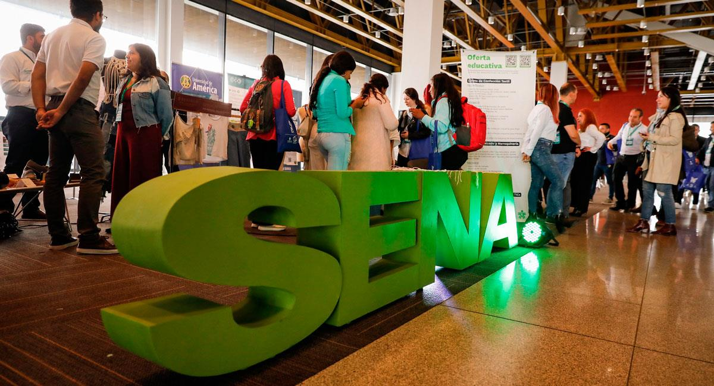
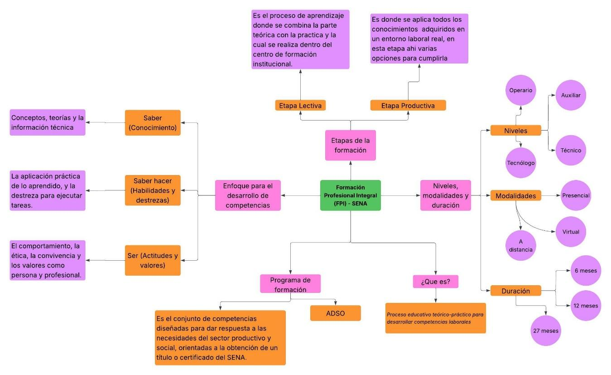
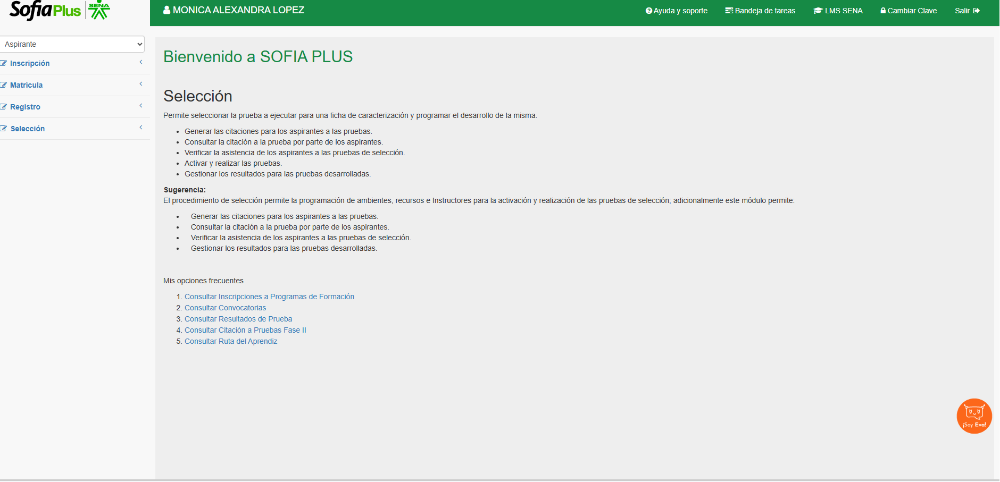
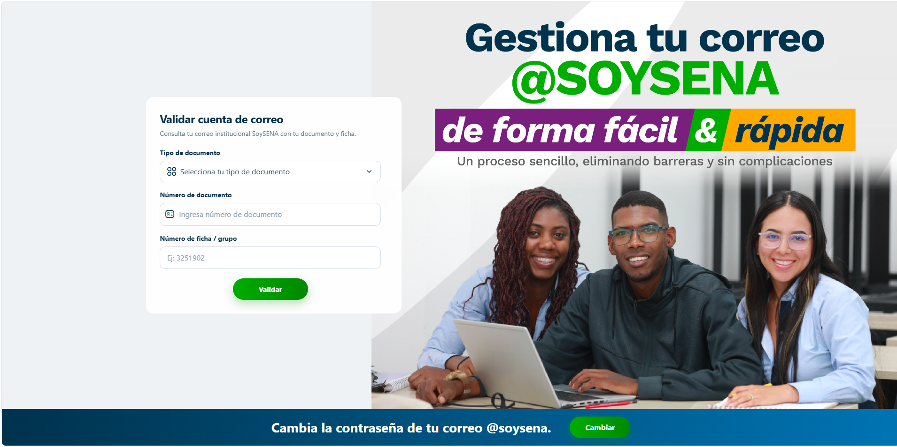
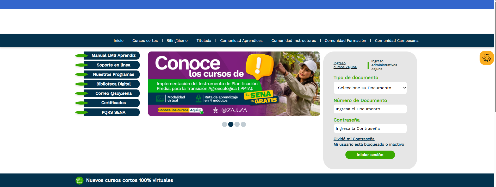
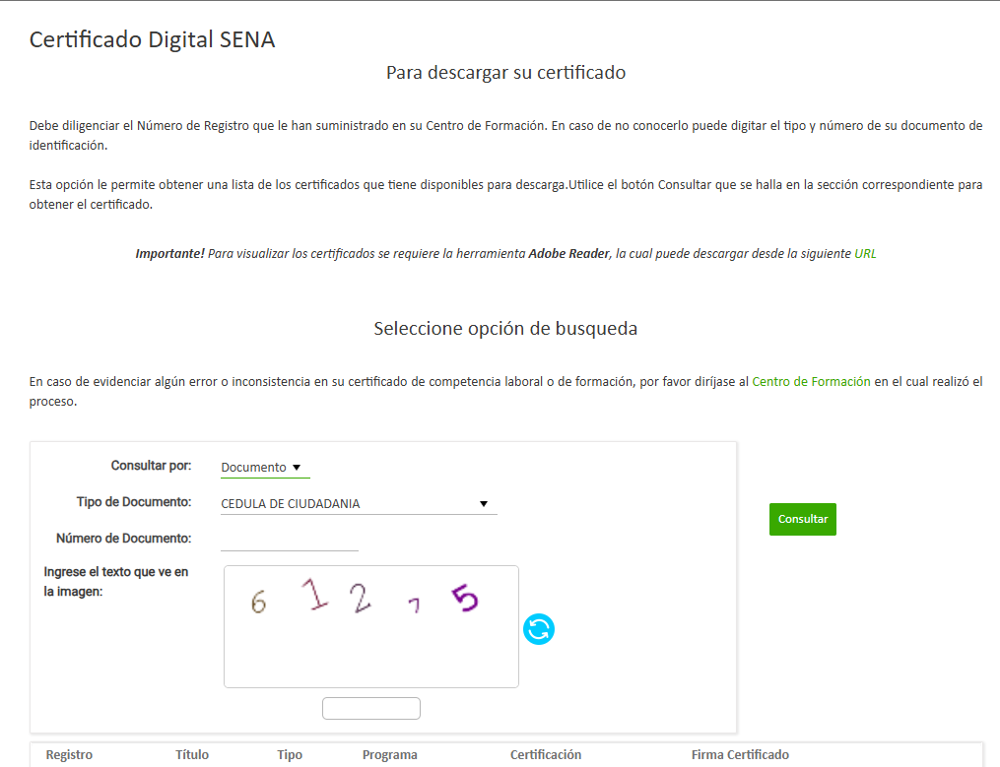
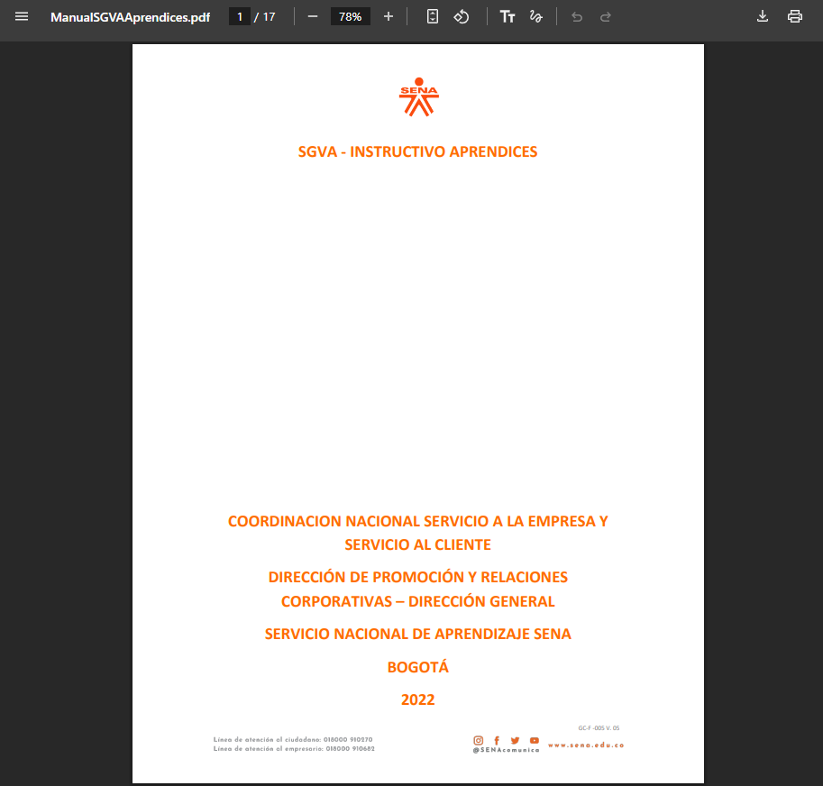
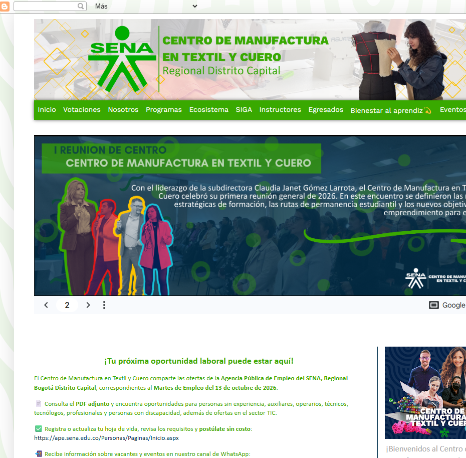
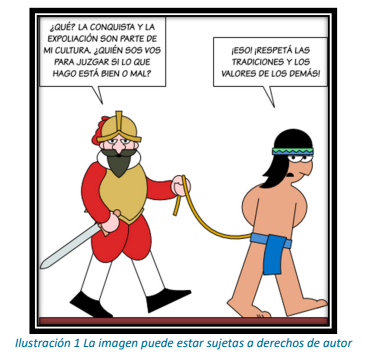

Guía 1: Contexto Institucional, Historia y Reglamento
Reflexión Inicial
¿Quién soy yo y cómo me veo como egresado, aportando al desarrollo social y técnico del país?
Somos personas con capacidades y valores que nos sentimos agradecidos de poder ingresar y de esta manera aportar nuestro conocimiento y al desarrollo, al momento de finalizar nuestros estudios, teniendo en cuenta nuestro compromiso con esta oportunidad.

Actividades de Contextualización e Identificación de Conocimientos
¿Que sabemos del Sena?
Tenemos entendido que es una institución pública, la cual se dedica a formar técnicos, tecnólogos, y en general a la formación gratuita, se entiende que su fuerza en la que radica está en la formación para las competencias laborales.
¿Cuál es su expectativa frente a la formación qué le puede ofrecer el Sena?
Se tiene una buena expectativa referente a la formación, ya que se obtendrá tanto una fase lectiva como productiva, y de esta manera se complementa de una excelente manera, ya que se obtiene de una vez una experiencia y en esta formación se debe realizar un proyecto que es importante para la etapa laboral.
Nota Periodística (Radiodifusora Nacional de Colombia)
¡Bienvenidos a nuestro noticiero de la RADIODIFUSORA NACIONAL DE COLOMBIA, hoy miércoles 21 de junio de 1957!, se crea el Servicio Nacional de Aprendizaje SENA.
Se comprende que es una metodología experimentada en Europa. Se entiende que entre el siglo XIX e inicio del siglo XX, luego de finalizar la Primera Guerra Mundial allí nace la iniciativa de formación profesional. Gracias a varios países que aportaron en el conocimiento, en eso se está Alemania, Francia, instituciones benévolas como: País Vasco y Cataluña y el diseño del sistema preventivo en Italia de Don Bosco.
Pero ni más ni menos gracias a estos conocimientos aportados y experiencias Brasil creó SENA esta institución junto con la OTP fueron unos encargados de recomendar la formación profesional en latinoamérica. En 1948, existe un hallazgo importante en la historia de Colombia, llamado el bogotazo el cual abre camino a que la UTC (unión de trabajadores de Colombia) en el quinto congreso, se le pide al gobierno la posible creación de un instituto y en 1954 se crea en instituto de capacitación obrera. A esto también se le suma una huelga que se realizó en mayo de 1957, que solicita la creación de una institución con mayor cobertura y más apoyo quien lideró en esa época. La UTC fue Rodolfo Martínez Tono. El cual de forma positiva nace el decreto 118 del 21 de junio de 1957. Y de esta manera nace EL SENA.
Misión y Visión
¿Qué hace el SENA?
"Estoy interesado en estudiar, confección industrial me han dicho que el sena puedo estudiar cuénteme qué hace el sena"
Rta: Por supuesto, allí puedes estudiar, ya que es una institución pública y gratuita, esta se enfoca en capacitar tanto técnicos como tecnólogos y estudios complementarios y de esta manera maximiza que una persona tenga un desarrollo integral y así puedan contar al desarrollo laboral, social y tecnológico de Colombia.
Estructura Orgánica del SENA
- Director General: Fray Ricardo Torres Castro
- Regionales del SENA: Cuenta con 32 regionales
- Director Regional (Distrito Capital): Claudia Janet Gomez Larrotta
- Subdirector del centro de formación y coordinación académica: Viviana Gómez Vargas
Identificación del Centro de Formación y Dependencias
- Coordinación Académica:
- Guillermo Adrián Linares / glinares@sena.edu.co
- Aida Bohorquez Agudelo / abohorqueza@sena.edu.co
- Fabio Alonso Camacho Sapuy / facamacho@sena.edu.co
- Coordinación Misional:
- Mariluz Rincón Prieto / Mrinconpr@sena.edu.co
- Biblioteca:
- Nuri Andrea Forero Ariza / nforeroa@sena.edu.co
- Bienestar al Aprendiz:
- Astrid Elena Bonilla Valencia / aebonilla@sena.edu.co
- Elvia Del Pilar Rojas Moreno / erojasm@sena.edu.co
- Myriam Georgina Galindo Galindo / mgalindo@sena.edu.co
- Administración Educativa:
- Jarinsson Gómez Repizo / jargomez@sena.edu.co
- Angie Lorena Pardo Gutiérrez / apardog@sena.edu.co
- Funcionario Encargado de Etapa Productiva:
- Gloria Mercedes Marín Grisales / gmmarin@sena.edu.co
- Sennova: Pendiente
Ambientes de Formación
En el conocimiento actual y nuestro primer trimestre tendremos clases en los ambientes: 218 - 208 - 222 - 217
Identidad Corporativa SENA
| MISIÓN | SÍMBOLO |
|---|---|
| "El Servicio Nacional de Aprendizaje SENA, está encargado de cumplir la función que corresponde al estado de invertir en el desarrollo social y técnico de los trabajadores colombianos, ofreciendo y ejecutando la formación Profesional Integral para la incorporación y el desarrollo de las personas en actividades productivas que contribuyan al desarrollo social, económico y tecnológico del país." |
Himno: Hace referencia a la motivación para que cada persona del país se pueda capacitar sin importar de qué parte del país sea. Escudo: Este hace referencia a que no solo está enfocado en una sola rama sino que cuenta con la capacitación en la industria, en el campo y en el comercio. Bandera: Con su mismo significado como el escudo, más sin embargo con un plus y es su color blanco que refleja la paz y transparencia de la institución. Logo-símbolo: Refleja que el centro del SENA es el aprendiz, brindándole desarrollo integral en la educación para la vida laboral. |

Servicios a los que tiene derecho en el SENA
| INFORMACIÓN | QUÉ COMPRENDE | UBICACIÓN / RESPONSABLE |
|---|---|---|
| Fondo emprender | Fondo de capital semilla financiado por el SENA para apoyar iniciativas empresariales, emprendimientos y proyectos innovadores desarrollados por aprendices y egresados. | Calle 57 No. 8 - 69 Bogotá D.C |
| Agencia pública de empleo | Servicio de intermediación laboral que conecta a los aprendices y egresados con vacantes del sector productivo, orientando en la elaboración de hoja de vida y entrevistas laborales. | Alejandra Rojas Calle 57 No. 8 - 69 Bogotá D.C |
| Relaciones corporativas | Área encargada de la gestión del contrato de aprendizaje, homologación de etapa práctica, convenios empresariales y seguimiento de la vinculación de aprendices a las empresas. | Gloria Mercedes Marín Gmmarin@sena.edu.co |
| SENNOVA | Sistema de Investigación, Desarrollo Tecnológico e Innovación del SENA. Promueve proyectos de investigación aplicada, semilleros y desarrollo tecnológico en las áreas del centro (cuero, calzado, marroquinería, confección). | - |
| Bienestar al aprendiz | Programa de apoyo integral que promueve la permanencia, salud, deporte, cultura, apoyo socioeconómico (apoyos de sostenimiento), liderazgo y orientación psicológica. | Lina Palencia Centro de Manufacturas de Textil y Cuero (Segundo piso) |
| Administración educativa | Área responsable del registro de matrícula, novedades académicas (cancelaciones, aplazamientos, traslados), expedición de certificados, constancias y registro en Sofía Plus. | - |
| Biblioteca | Espacio físico y digital que ofrece préstamo de libros técnicos, bases de datos académicas, espacios de lectura, salas de cómputo y consulta especializada para la formación. | - |
Caso: Reglamento del Aprendiz
| CONTEXTO Y CASO | DESCRIPCIÓN |
|---|---|
| Contexto | Grupo de 25 aprendices en etapa lectiva, la mayoría de ellos presenta problemas de rendimiento académico reiterado. |
| Caso Planteado | Los instructores del equipo ejecutor han percibido que algunos aprendices han reprobado un 35% de los resultados de aprendizaje, además de percibir olor a marihuana y estados alterados de conciencia y motricidad al llegar al ambiente. El líder de grupo afirma que conversó con ellos y manifiestan que consumen sustancias psicoactivas porque les hace sentir más seguros y mejora su capacidad. |
Solución del Caso:
1. Calificación de la falta:
Es considerada una falta grave, debido a qué el consumo de sustancias psicoactivas o llegar a la institución bajo el efecto de alguna de ellas constituye una falta grave, ya qué afecta la convivencia y el proceso formativo, sumado al bajo rendimiento repetitivo y la reprobación de más del 35% de los resultados de aprendizaje.
2. Los criterios de calificación:
Se tienen en cuenta factores cómo el grado de culpabilidad, el daño causado a la institución o la comunidad educativa, al ser una conducta reiterada y la afectación al desarrollo de aprendizaje.
3. Clasificación de la falta:
Es clasificada como Grave.
4. Artículos y literales vulnerados (Reglamento del Aprendiz):
- Consumo de sustancias psicoactivas: Capítulo de deberes y prohibiciones. Artículo 9 (prohibiciones), Literal c (ingreso, porte, comercialización, distribución de sustancias psicoactivas o bebidas embriagantes).
- Bajo rendimiento reiterado (reprobar el 35%): Capítulo de deberes y del proceso de formación / evaluación. Artículo 7 (deberes del aprendiz), literales relacionados con cumplir con las actividades de formación, aprobar los resultados de aprendizaje en las fechas establecidas y mantener un rendimiento académico adecuado.
5. Debido proceso (Medidas formativas, sanciones y procedimiento):
- El instructor o equipo comunica el caso de manera escrita al coordinador del centro.
- Se cita al aprendiz o aprendices involucrados a descargos garantizando su derecho a la defensa y debido proceso.
- Se reúne el comité de evaluación y seguimiento para analizar las evidencias (bajo rendimiento y reporte de la situación).
- El comité emite una recomendación y el subdirector toma la decisión mediante resolución, la cual puede acarrear una sanción cómo el condicionamiento de la matrícula o la cancelación.
Guía 2: Proceso de Gestión
1. Reflexión Inicial: Procesos Industriales de Totto y Software
En el video a continuación podemos observar cómo diversos procesos ayudan a la organización de una empresa en este caso Totto, de ahí se pudo detallar varios procesos qué a su vez relacionamos con el área de enfoque de nuestra formación:
- 1. Recepción y control de materia prima: mediante un proceso físico se hace la recepción de la materia prima, a su vez se hace una clasificación por varias categorías ya impuestos por la empresa. En la parte del software analizamos qué este proceso se hace mediante un sistema de gestión de control de inventarios qué registra la entrada, stock y lotes de los materiales en una base de datos.
- 2. Ingeniería de producto, trazo y lote: ya internamente se hace el proceso de impresión de patrones, extendido de telas y uso de las diversas máquinas de corte ya sean manuales o automáticas. Gracias a un software CAD (Diseño asistido por computadora), se agiliza el proceso y ayuda a optimizar el rendimiento de la tela, mediante coordenadas facilitando el uso de las mismas.
- 3. Proceso de bordado y estampado: mediante máquinas bordadoras programadas. En la actualidad la mayoría de máquinas de bordado y diseño operan con archivos vectoriales y de control digital donde se define colores, patrones de manera más minuciosa y detallada.
- 4. Confección y ensamble: acá se hace lo qué en la unión de las diversas partes (forros, refuerzos, correas, entre otras). Esto es gracias a un sistema ERP (Planificación de recursos empresariales) las cuales asignan órdenes de producción, y mide tiempos.
- 5. Distribución y comercialización: se evidencia el proceso de alistamiento, clasificación y despacho de los productos a las tiendas alrededor del país. Gracias a plataformas logísticas de despacho, inventario, códigos de barras en un sistema POS ayudan al rastreo de los diversos despachos para así asegurar la distribución de los mismos.
2. Actividades de Contextualización e Identificación de Conocimientos
| Lo que se conoce | Lo que se quiere aprender |
|---|---|
| Tengo un conocimiento leve en el lenguaje HTML | Quisiera aprender a realizar mejores formas de tomar análisis de datos que sean más eficientes y tengan más pericia a la toma de datos. |
| Tengo conocimiento previo en C++ / C en los cuales he logrado hacer una calculadora o realizar anidados. | Desearía aprender a realizar muy buenos trabajos de presentación mediante el Front end y ir mejorando con el tiempo la visualización de mis trabajos. |
| Python | Angular |
| MySQL | Back End |
| Tengo conocimiento Arduino AS 400, son dos lenguajes de programación más guiados a la electrónica y a la automatización mediante microcontroladores. | Tener una idea más especializada sobre la base de datos y cómo aprender a manejar datos de forma más concreta en la cual sea más fácil su búsqueda como la información que deseo dar. |
3. Analizar los componentes del proceso de gestión de la Formación Profesional

4. Competencias del programa de formación
Información del Programa:
- Programa: ADSO (Análisis y Desarrollo de Software)
- Modalidad: Presencial
- Nivel: Tecnológico
- Duración: 27 meses
Competencia: Elaboración de la Propuesta Técnica del Software
1. Definir especificaciones técnicas del software de acuerdo con las características del software a construir
Criterios de evaluación:
- Diseña formatos de fichas técnicas de acuerdo con estándares.
- Elabora referentes técnicos de acuerdo con la normatividad legal vigente.
- Dimensiona las licencias de software de acuerdo con las características de la solución y las necesidades de la empresa.
- Estima las condiciones técnicas y económicas de acuerdo con las características de la solución de software y las necesidades de la empresa.
Conocimientos de saber:
- Tecnología informática: características de hardware y software, tendencias de fabricación TI y mercado en el ámbito nacional e internacional.
- Soluciones informáticas: diagnóstico de necesidades y elaboración de referentes técnicos.
- Gestión tecnológica: conceptos y características, innovación, emprendimiento y actividades de la gestión tecnológica.
- Contratación de servicios TI: concepto, tipos, principios, características y normatividad general de la contratación tanto privada como estatal.
- Proyectos TI: tipos, características y fases.
- Licenciamiento de software: concepto, tipos, características y diferencias de carácter técnico y de condiciones de cumplimiento.
- Propiedad intelectual: derechos de autor, propiedad industrial y registro de software.
2. Elaborar la propuesta técnica del software de acuerdo con las especificaciones técnicas definidas
Criterios de evaluación:
- Elabora un análisis comparativo de proveedores considerando costos, cantidad y especificaciones técnicas definidas.
- Estima los costos de software y hardware de acuerdo con las características del negocio.
- Documenta la propuesta técnica según las especificaciones de la solución de software.
Conocimientos de saber:
- Costos: conceptos, fundamentos y clasificación.
- Ficha técnica: elementos mínimos para describir los referentes técnicos.
- Términos de referencia: concepto, elementos y construcción.
3. Validar las condiciones de la propuesta técnica del software de acuerdo con los intereses de las partes
Criterios de evaluación:
- Realiza la presentación de la propuesta según los propósitos de la negociación.
- Documenta las sugerencias del cliente según la necesidad del negocio.
- Ajusta los parámetros técnicos de acuerdo con los resultados de la negociación.
Conocimientos de saber:
- Comunicación: técnicas, tipos y habilidades.
- Negociación de tecnología: estilos de negociación, principios de negociación, identificación y solución de conflictos.
- Contrato: concepto, tipos, partes y normatividad.
- Acuerdos de Nivel de Servicio (ANS): concepto, formulación y métricas.
5. Etapa Productiva
- 1. Contrato de Aprendizaje: Se compone de dos partes, del patrocinio y de su parte productiva donde el aprendiz goza de unos beneficios en los cuales recibe el 75% de un SMLMV con prestaciones de ley, y una parte productiva donde recibe el 100% de un SMLMV con prestaciones de ley.
- 2. Pasantía: Donde el estudiante concierta un acuerdo con el contratante para poder realizar 40 a 48 horas semanales, en las cuales pueda desarrollar sus competencias referente al programa que está desarrollando sin ningún acuerdo monetario.
- 3. Monitorias: Son actividades que permiten apoyar las actividades educativas de la institución con el fin de mejorar los planes de las actividades; normalmente para aplicar a esta opción se realizan convocatorias anuales en las cuales serán seleccionados los estudiantes.
- 4. Asesoría en Pymes: El aprendiz busca una Pyme ya sea una institución nacional, ONG, o una entidad sin ánimo de lucro (Cruz Roja); se dará el visto bueno luego de que las PYME certifiquen el trabajo del aprendiz relacionado a los objetivos requeridos en el programa.
- 5. Vínculo Laboral: Se dará cuando el aprendiz contacte con una empresa la cual le permita aplicar sus competencias y resultados mediante un contrato laboral que permita al aprendiz desarrollar sus competencias con una remuneración económica.
6. Principios de Evaluación SENA
Está orientada a comprobar que el aprendiz realmente logre cumplir con todos los resultados de aprendizaje mediante las diversas evidencias. Se dividen en los siguientes principios:
- Integral: tiene en cuenta el saber, el saber hacer y el ser, contemplando las dimensiones de la formación.
- Continua: se realiza de manera consistente, no sólo en los ambientes sino en cada parte de la formación.
- Participativa: involucra 3 partes importantes: la autoevaluación (criterio propio), la coevaluación (de los compañeros) y la heteroevaluación (realizada por el instructor).
- Flexible: tiene una adaptabilidad dependiendo de los diversos contextos y características que lo involucran.
- Objetiva y transparente: se maneja de una forma clara, basada en evidencias y resultados reales, evitando las subjetividades.
7. Certificación
El tipo de certificación que se recibirá es un título de formación titulada como Tecnólogo en Análisis y Desarrollo de Software (ADSO), otorgado por el Centro de Manufactura en Textil y Cuero.
8. Cadena de Formación
Es cuando el aprendiz dispone de un seguimiento basado en lo estudiado, lo cual le permite fortalecer su crecimiento como profesional en instituciones que se dediquen a la formación profesional, donde el SENA tiene convenios con Universidades para tener continuidad en su crecimiento profesional.
3.4. Actividad de Transferencia: Plataformas y Servicios Institucionales
Evidencias del uso y reconocimiento de las plataformas tecnológicas del SENA:
1. Sofía Plus
Gestión de la oferta educativa, inscripción a programas, matrícula y consulta de resultados.

2. Creación de usuario de correo soysena
Validación y gestión sencilla de la cuenta de correo institucional.

3. Territorium
Ambiente Virtual de Aprendizaje (LMS) para el desarrollo de guías y entrega de evidencias.

4. Biblioteca Sena
Integrador de recursos de información, catálogo bibliográfico, bases de datos y repositorio institucional.

5. Certificados Sena
Plataforma para la consulta y descarga de certificados de formación y competencias laborales.

6. Sistema Virtual de Aprendices (SVA) - Gestión del contrato de aprendizaje
Instructivo y pautas para el seguimiento y gestión de la etapa productiva bajo contrato de aprendizaje.

7. Blog Centro de Formación
Espacio informativo institucional del Centro de Manufactura en Textil y Cuero (avisos, eventos y ofertas de empleo).

Guía 3: Mujica & Proyecto de Vida
1. Actividades de apropiación reflexión
Según la mirada de Mujica responda a las preguntas:
¿Qué significan las palabras imposible y derrotado y en qué momento de su vida las aplicaría, teniendo en cuenta que para él lo imposible cuesta un poco más y derrotado, solamente es bajar las manos?
R//: El significado de las palabras aplican según su tipo de contexto, pero para la vida diaria esto surgiría en los problemas de las personas o que abarcan como algo nulo de poder hacer, usualmente usamos esta palabra para indicar que no podremos hacer algo, pero teniendo en cuenta la filosofía de “Jose Mujica” nada es imposible para el humano siempre y cuando uno se esfuerce más, no simplemente dar el 100%, si no dar el 110% o como lo llaman las personas, dar la milla extra.
El estar derrotado es simplemente un bloqueo o quedarse desanimado, para “Jose Mujica” esto solo es mantener firmemente la fe de continuar asi todo está acabado o si la solución seda difícil, pero no “bajar las manos”, ya que esto significa que no se desea luchar más, no continuar más.
¿Cuál es el sentido que hoy le está dando a su vida?
R//: El sentido actual de nuestras vidas es lograr establecernos como profesionales en las áreas que nos apasionan en la vida o que establecemos como ideales para el desarrollo de nuestro camino laboral, el punto al final del camino es largo, donde actualmente estaremos laborando en lugares los cuales no enfocan nuestras competencias para nuestra carreras, pero nos ayuda a continuar el estudio hacia el grado profesional que queremos.
2. Actividades de contextualización
Reflexione sobre los sucesos que han marcado el desarrollo de su vida y responda las preguntas:
1. ¿Quién soy?
R//: Es una pregunta bastante amplia, en la cual se resumiría que soy alguien que desea crecer a pesar de limitaciones, laborales, económicas o personales, dando mi esfuerzo todos los días, con el fin de llegar a las metas impuestas en mi proyecto de vida.
2. ¿Quién quiero ser?
R//: Una persona en búsqueda de completar su profesión, complementando su vocación a nivel de estudios y mejorando como persona.
3. ¿Qué camino debo tomar?
R//: Usualmente el camino correcto no es simple de ver, la decisiones deben ser correctas para lograr un camino ideal y poder llegar a la meta, aunque a veces las respuestas erradas pueden ser mejores.
3. Proyecto de Vida

¿En esta imagen considera que los dos personajes tienen la misma dignidad? y ¿por qué?
R//: No, ya que la dignidad del segundo personaje está siendo respetada, vulnerada quitando derechos y opiniones.
¿En esta imagen considera que ambos personajes tienen la misma cultura? ¿Por qué?
R//: No, ya que el primer personaje está sometiendo al segundo ideales, creencias y culturas las cuales no corresponden a las del segundo personaje.
¿Qué opina Ud. de esas expresiones? ”...Quién sos vos para juzgar si lo que hago es bueno o malo” y ”...respeta mi cultura”.
R//: Es una expresión de superioridad e idealismos sobre quien verdaderamente puede juzgar los actos cometidos por las personas, ya que moralmente se tiene la creencia sobre un dios o presencia la cual dirige lo que es “Bueno” y “Malo”, esto creando que las personas al tener culturas distintas irrespetan los demás valores y tradiciones de otras culturas.
¿Qué opinión le merece la respuesta que tiene el personaje que caracteriza un nativo?
R//: Actualmente se entenderá por entender y respetar las culturas y tradiciones de otras personas, teniendo en cuenta que la imagen se sitúa cuando los españoles “colonizaron” a nativos indígenas, esto generando disputas y esclavización de estos.
¿Si una acción maltrata la dignidad del ser humano, puede ser considerado un valor cultural?
R//: Esto depende del tipo de contexto, ya que moralmente la dignidad del ser humano se trata de sostener como un derecho, por cultura se ayuda o se da dignidad a las personas.
4. Autobiografía
Con el fin de comunicar los acontecimientos vividos responda las siguientes preguntas, de manera descriptiva:
¿Quiénes han sido las personas que han tenido mayor influencia en su vida y de qué manera?
R//: Familiares, amigos y conocidos, estos influyendo en función de sus propias experiencias o vivencias personales, dando sus mejores opiniones para ayudarme a elegir mi ruta en la vida.
¿Cuáles han sido los acontecimientos (dolorosos o alegres) que han influido en forma decisiva en lo que usted es ahora?
R//: Accidentes, fallecimiento de familiares o amigos, pero no todo es triste, situaciones alegres como graduaciones, fiestas familiares o con amigos, reconocimientos en los cuales nos motivan a mejorar tanto como persona y personalmente.
¿Cuáles han sido sus principales éxitos y fracasos? y ¿porque lo recuerda especialmente?
R//: Graduarme de tecnólogo en gestión del riesgo en seguros, crecimiento espiritual y paz mental, tener autonomía en el campo profesional y laboral, cuidar de mi salud y de mi alimentación en conjunto con la de salud y bienestar de mi familia, el tecnólogo lo recuerdo por que fue reciente y lo que hablo sobre la salud, crecimiento espiritual y paz mental lo vivo dia a dia esta muy presente en el diario vivir.
¿Cuáles han sido las decisiones más significativas que ha tomado? y ¿qué consecuencias tuvieron en su vida?
R//: Retomar estudios de nuevo, teniendo en cuenta que tengo una familia un hogar bastante grande a donde mi esposa y mis tres hijos son mi pilar y sacar tiempo de calidad que les podría brindar a ellos y dedicarle al estudio es una decisión muy significativa, por que me hizo organizar mi tiempo entre el trabajo y la familia, las consecuencias son positivas y negativas, porque aprendo cosas nuevas y me actualizo en el tema de la tecnologia y software y negativas por que no le dedico mucho tiempo a mi familia.
5. Reescribir el proyecto de vida de acuerdo con principios y valores; su responsabilidad
Desarrolle las siguientes acciones:
Escriba una lista de las personas, instituciones o situaciones en las cuales se podría apoyar, para realizar el paso a paso de su proyecto de vida. (familia, amigos, instituciones, situación económica, social, política, religiosa y cultural que lo rodea).
1. Reflexione en qué medida las personas, instituciones o situaciones anteriores le apoyan el proyecto de vida
R//: Estos afectan o ayudan en el crecimiento del proyecto de vida, ya que mediante vivencias y situaciones, estas generan el crecimiento y desarrollo personal.
2. Describa ¿qué situaciones actuales le impiden que pueda realizar el proyecto de vida?
R//: Económicas, familiares, laborales.
3. Escriba las acciones que podría realizar para superar los impedimentos, para el logro del proyecto de vida
R//: Desarrollar estrategias con el fin de establecer metas, una por una, generando un crecimiento personal, así mismo aportando en el desarrollo del proyecto de vida, culminando en la meta establecida en el proyecto de vida.